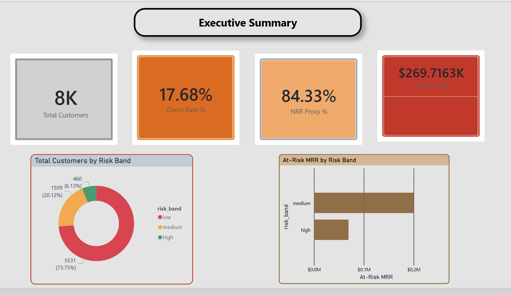
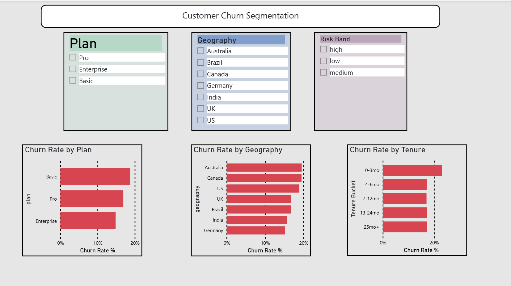
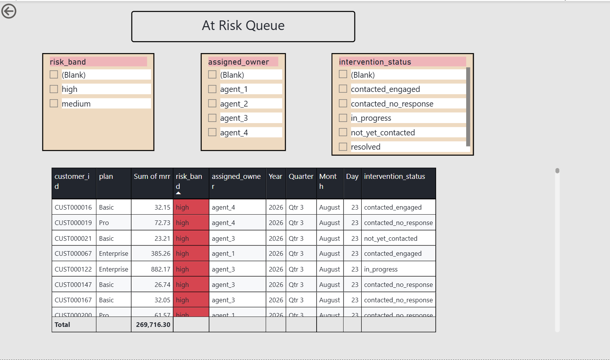
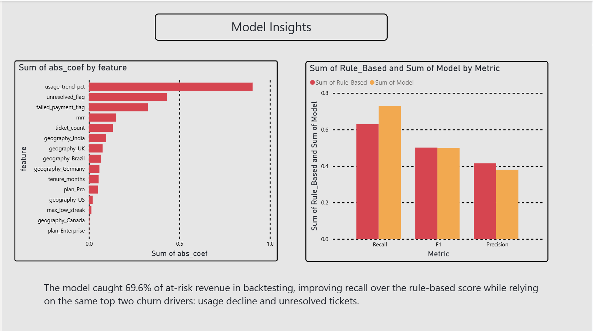

ChurnWatch
Finding at-risk customers before they leave — and proving the model actually works.
01The Problem
Companies lose subscription revenue every month to customer churn, but most only find out a customer is leaving after they've already cancelled. This project asks: can churn be predicted from behavior before it happens, using data a company already has?
02The Data
A customer-360 view was built in PostgreSQL from three linked source tables — subscriptions, product usage, and support tickets — covering 7,500+ customer records. CTEs and window functions (LAG, ROW_NUMBER) tracked engagement trends over time and tagged each customer's lifecycle stage.
03Approach
Signal analysis first
Rather than running a black-box model immediately, specific hypotheses were tested directly in SQL: does usage decline predict churn? Do support tickets? Failed payments? Each was measured as a churn-rate comparison between groups, not assumed.
Two models, compared honestly
A weighted rule-based risk score was built first, with each signal's point value set proportional to its measured churn-rate multiplier. A logistic regression model was then trained independently on the same features and benchmarked head-to-head against the rule-based score on identical held-out customers.
04Analysis & Dashboard
The Power BI report (below) tracks churn KPIs, segments customers by plan, geography, tenure, and risk band, and turns the model's output into an operational retention queue with assigned owners and intervention status.




05Key Findings
| Finding | Number |
|---|---|
| Churn rate — 2+ months of declining engagement | 58% |
| Churn rate — baseline | 18% |
| Risk multiplier from usage decline alone (≥40% drop) | ~5x |
| Model recall (vs. 63.0% rule-based) | 72.8% |
| At-risk revenue caught in backtesting | 69.6% |
| High-risk vs. low-risk band churn differentiation | ~7x |
class_weight='balanced' and evaluated on precision/recall, then translated into a business-impact number — revenue caught vs. missed — rather than left as an abstract statistic.06Business Implications
Rather than declaring the rule-based score or the ML model "better," both are reported honestly: they optimize for different things (precision vs. recall), and the trade-off itself is the insight a retention team would need to choose a workflow. The retention queue translates the analysis into assigned owners, SLAs, and recommended actions per segment — moving the project from analysis to something operational.
What I'd do differently with real data: use a true time-based train/test split instead of a random holdout, validate the injected churn-driver patterns against real historical outcomes, and build true Net Revenue Retention once expansion/contraction revenue data is available.